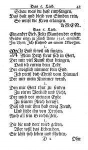
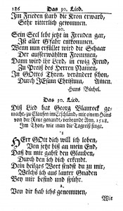

Artistic Theologian 2 (2013): 64¡V92
Download this article as a PDF
Preston Lee Atwood, ThM, is a Master of Arts (Archaeology and Biblical Studies) student at Southwestern Baptist Theological Seminary where he works in the President¡¦s Office as the Administrative Assistant to the President and Vice President for Strategic Initiatives.
The accessible scholarly treatment of Anabaptist hymnody in the past
one-hundred years has been modest with respect to quantity, with some
keynote publications appearing a decade or more apart.1 Published
academic work has focused on broad categories of interest, such as A. J.
Ramaker¡¦s ¡§Hymns and Hymn Writers among the Anabaptists of the Sixteenth
Century,¡¨ and Harold S. Bender¡¦s short yet often-cited ¡§The Hymnology of the
Anabaptists.¡¨2 Characteristic
of these publications and others is the historiographical trend to
concentrate on those who penned the extant hymns, rather than the hymns
themselves.3 A
positive step in a more specific direction is the scholarly gravitation
toward investigating the form and content of the martyr ballad, a particular
and prevalent feature of hymnic expression practiced among the early
persecuted Anabaptists.4
Some scholars have noted that further concentrated study of various categories of hymns and their authors, including both the historical occasions that birthed the hymns as well as their literary content, will help to achieve a deeper understanding of both the thought and passion of central Anabaptist figures and the spirit of the Radical Reformation movement as a whole.5 This essay, though far from exhaustive, is an attempt to fill some of the void unaddressed by those who have treated the subject of Anabaptist hymnology on a more general level. The attention herein is directed toward the early Swiss Brethren Anabaptists, namely, Felix Manz, George Blaurock, and Michael Sattler. Proposed in this paper is the thesis that the early Swiss Brethren hymns reveal much of the hearts of these men as well as the historical occasions these early Anabaptists experienced. This claim will be supported by examining and evaluating the provenance, purpose, and literary content of those hymns known to be written by early Swiss Brethren Anabaptists. An overall evaluation will highlight the emotional, historical, and theological continuity manifested in these hymns.
Provenance of Swiss Brethren Hymnody
The precedent of hymn-writing came long before Anabaptism concretized. As is well-known, Martin Luther, the German Protestant reformer and father of German hymnody, had solidified the practice of congregational hymn-singing, an act deemed defiant from the perspective of Rome.6 However, in Germany the practice of singing melodies in group-fashion preceded Luther¡¦s influence by at least four hundred years.
Musical Influences in Germany
German hymnody finds its roots in a disgruntled German people who opposed longstanding liturgical traditions in the Roman Catholic Church, which established itself forcefully as the new religion among German tribes in the eighth century. Roman Catholic services were conducted only in Latin, and the chanting by the priests and the choir¡¦s responses were set to Gregorian music (Cantus Romanus).7 Thus, there was no place in the worship service for the congregation to express itself musically.
Eventually, brief acclamations in the vernacular were developed called Rufe that
served as responses for the congregation. The more well-known Leisen, considered
a subset of the Rufe, were
more elaborate, consisting of rhyming metrical strophes ending with the
response ¡§Kyrieleis,¡¨ a
variant of Kyrie
eleison and the source of the term Leise to
describe the genre.8 As
early as the ninth century, German translations of Latin hymns appeared,
and by the late Middle Ages congregations occasionally sang German
versions of the sequence. The Leisen were
also closely connected to these German translations of sequences,
possibly developing as shortened versions of them, and later became
important sources for the Lutheran chorale.In addition, according to
Robert Marshall and Robin Leaver, ¡§between the 9th century and 1518 over
1400 German vernacular hymns are known to have been written.¡¨9
Most influential for hymnological development in Germany were the Minnegesang and the Volkslied, songs arising from the experiences of the people in normal, everyday life. Although the content of these songs was not necessarily religious, the songs embodied lyrical prose expressed through both melody and verse. Ramaker states that because these songs contained ¡§a deep religious tone¡¨ and represented the moods and emotions of the people, ¡§it is not at all surprising that many of the Reformation hymns, both Lutheran and Anabaptist, adapted their songs to the well-known tunes of the folksongs.¡¨10 As will be mentioned below, some tunes of early Swiss Brethren hymns (e.g., those by Manz and Sattler) were from the pre-Reformation era and perhaps from Roman Catholic liturgy, but for the larger Anabaptist movement the Minnegesang and Volkslied proved to be more influential for the rise of distinct Anabaptist hymnody.
Speaking to the reason why folksongs were influential, Rosella Reimer
Duerksen suggests that the Volkslied served
as the medium through which the Anabaptists expressed their deepest
sentiments about their circumstances; its form and style was the most
conducive to advance the Anabaptist agenda.11 When
compared to other musical traditions in Germany during the time of the
Anabaptists, it is clear that the Anabaptist practice of hymn-writing
finds more parallels with secular, German folk music than it does with
any other musical tradition.12
In summary, the German musical influences that aided in giving birth to Anabaptist hymnology are diverse. It might be said that the Roman Catholic Church opened the door (though not without resistance) for congregational participation in the worship service, German Protestant hymns provided the tune, and German folk music offered the overall form and style. This summary does not deny the complexities involved in reconstructing a historical account of the German musical influences behind the Anabaptist practice of hymn-writing; this summary serves merely to accentuate the chief contributions of each stream of influence.
Swiss Brethren Acceptance of Hymn-writing
Significantly, it seems that not all of the Swiss Brethren were
originally receptive to the practice of hymn-writing. Conrad Grebel, for
instance, having once embraced the regulative principle of worship in
the Zwinglian tradition, likely opposed some forms of church music,
especially instrumental music.13 However,
it is known that hymns were produced and used by other Swiss Brethren
while Grebel was in close fellowship with them. Apparently, the practice
was not one worthy of division, or perhaps Grebel came to appreciate the
hymns.14
The practice of hymn-writing was originally accepted by the early Swiss Brethren primarily because of its didactic function as well as its emotional expression. As demonstrated by Luther and others before him, the memorization and vocalization of hymns proved to be a significant vehicle for learning theological truths.15 However, most of the early Swiss Brethren hymns, though didactic in terms of function, are rather elementary in terms of tune and doctrinal expression.16 One cannot forget the early Anabaptist situation in which survival was a central goal. The time and luxury to compose both music and lyrics in any refined sense evaded the early Anabaptists. Additionally, the Anabaptist congregations of the Swiss Brethren were filled with uneducated people, and it was expensive to print music. In fact, the act of publishing could have potentially revealed the location of those Anabaptists who were hiding.17 Thus, the style and form characteristic of German folk music served as adequate templates for the Swiss Brethren to borrow and modify according to their immediate context and pedagogical and devotional purposes. The result of such adaption and usage bolstered a strong faith for the Swiss Brethren amidst intense persecution.
Usage of the Early Swiss Brethren Hymns
Felix Manz¡¦s ¡§With Pleasure I Will Sing,¡¨ written shortly before his martyrdom in 1527, is the first hymn known to have been written by a member of the early Swiss Brethren and also serves as the first hymn known to have been written by any Anabaptist.18 His hymn characterizes the spirit of most of the early Swiss Brethren hymns. Indicative of Manz¡¦s hymn is his overwhelming desire to bring glory to God because of God¡¦s grace, especially the grace that comes when one is suffering severe persecution.19 Later Manz¡¦s hymn will be categorized as a martyr hymn because of its theme of suffering, extensive length, and the historical occasion that birthed it.
Evangelism
Because Manz wrote very little, it is impossible to declare with certainty why Manz wrote his hymn. However, he most likely wrote it while he was held captive for two months at the Wellenberg prison in Grüningen, anticipating imminent martyrdom by drowning in the Limmat River.20 Typical of Manz was his ability to maintain a bold and vibrant witness even amidst persecution. Reportedly on January 5, 1527, Manz shared his faith with those authorities who led him to his place of execution as well as to those who were watching afar.21 If it is true that Manz wrote his hymn at Wellenberg and had every reason to believe that his martyrdom was certain, then it seems that at least one of Manz¡¦s motivations in writing his hymn was to foster the strength needed to exhibit a potent witness before his executioners and to heighten the hopes of those believers who were present. With respect to Anabaptist evangelism, Mennonite historian Christian Neff states:
A flood of religious songs poured over the young brotherhood like a
vivifying and refreshing stream. The songs became the strongest
attractive force for the brotherhood. They sang themselves into the
hearts of many, clothed in popular tunes. There were mostly martyr
songs, which breathed an atmosphere of readiness to die and a touching
depth of faith.22
The impact that Manz¡¦s hymn has brought to generations following his
death is immeasurable. Since Manz¡¦s death, his hymn has undergone
various musical arrangements that still inspire those who sing them,
such as Amish communities.23
Devotional and Congregational Use
Similarly, Blaurock and Sattler wrote prison hymns. Given the personal
reflection inherent in these hymns, they were presumably used for
devotional reasons. These hymns also found a place in the lives of those
who the Swiss Brethren shepherded. Bender submits that the ¡§unusual
number of Anabaptist hymn writers and hymns suggests that these hymns
were much used among the Anabaptists for personal and family reading and
singing as well as in the congregation.¡¨24 Bender
does not have the Swiss Brethren alone in view here, but it is true that
many of the leaders of the early Swiss Brethren, with the principal
exception of Grebel, wrote hymns. Many of those hymns experienced
continued usage in subsequent generations and in multiple Anabaptist
traditions.25
Exhortation and Teaching
Lastly, the early Swiss Brethren wrote their hymns to embolden the faith of their brothers and sisters in Christ. This pastoral inclination is evident in almost all of Sattler¡¦s writings, especially in his Letter to Horb.26 The first two stanzas of Sattler¡¦s hymn ¡§When Christ with His Teaching True¡¨ also reflect a pastor¡¦s heart, alluding more than once to the need for Christ¡¦s ¡§flock¡¨ and ¡§beloved disciples¡¨ to follow Christ¡¦s teaching with patience and courage.27 These general admonitions appear throughout the lyrical content of the Anabaptist hymns. Stauffer argues that the implied hymnic exhortation came from the constant threat of persecution:
It is the common religious attitude, the mood of passion in the martyr¡¦s
church, which makes all these hymns one in style and spirit although
coming from different sections, countries, and times.28
Bender purports that it was love that served as the common thread
unifying all the Anabaptist hymns.29
Considering the aforesaid uses of the early Swiss Brethren hymns, they
obviously played a central role in unifying the spirit of those who were
sympathetic to the Swiss Anabaptist cause. The notion that these men
wrote hymns prior to their imprisonments is not historically verifiable;
however, it is improbable that the early Swiss Brethren wrote their
hymns simply for themselves. This can be deduced from the plain fact
that much of the content in the Swiss Brethren hymns only makes sense if
it was written for the purpose of corporate or group musical worship.30
Literary Content of the Early Swiss Brethren Hymns
Felix Manz
Born in Zurich around 1498, Manz, an illegitimate son of a Catholic
priest, had the opportunity to be well trained in the classical
languages.31 Privy
to learning, he joined those who were studying under Zwingli. Manz
became disgruntled with Zwingli¡¦s method of reform and his insistence on
maintaining the practice of infant baptism. After departing from
Zwingli, Manz helped to form an Anabaptist gathering in his home.
Because of his efforts to spread the Anabaptist vision, Manz, along with
Grebel and Blaurock, was imprisoned in the Witch¡¦s Tower in Zurich.
After being released, Manz was imprisoned again in Grüningen. Soon
thereafter he became the first Anabaptist martyr.32
Scholars speculate that Manz wrote his one and only hymn while he was imprisoned in Grüningen.33 The style and content of his hymn are characteristic of those hymns known to have been written in a prison context. Known today as ¡§I Will Delight in Singing,¡¨ Manz¡¦s hymn is an eighteen-stanza expression of God¡¦s righteousness (Fig. 1). Ramaker states the following of Manz¡¦s hymn:
The hymn is a song of praise for God¡¦s love and forbearance to him.
God¡¦s righteousness is contrasted with the injustice of the false
prophets . . . Christ knows his great sorrow, and to Him he will cleave.
The hymn is . . . characteristic of the songs of the Swiss Brethren:
their quiet fortitude in suffering and death.34
The following are stanzas one, twelve, and eighteen of Manz¡¦s hymn:
I will delight in singing,
In God o¡¦er-joys my heart;
For grace He is me bringing,
That I from death depart
Which lasting ever, hath no end;
I praise Thee Christ from heaven,
Who dost my grief attend.
Christ, in His blood thus shedding,
Which He did willingly,
And His great task not dreading,
This would He have us see,
Us with His holy power endows;
For who Christ¡¦s love constraineth,
In holy likeness grows.
So those who Christ withstanding,
Whom worldly lust ensnares,
Shall likewise find their ending;
No godly love is theirs.
So closeth here this hymn, indeed;
With Christ I am remaining,
Who knows and meets my need. Amen.35
{kind=link}

George Blaurock
Outliving Manz by two years was George Blaurock, a Swiss native born
around 1491 in Bonaduz, a small village in Grisons, Switzerland.36 Blaurock
attempted to attend the university, but he quickly found himself
uninterested and became a priest and a vicar in Trins. Eventually he
forsook his ordination and committed himself to understanding the Swiss
Reformation. He was ultimately attracted to Zurich, where the heart of
the Radical Reformation was taking place. After hearing of some zealous
radicals, Blaurock set out to identify himself with them. Soon
thereafter, Blaurock, an outspoken and fervent evangelist, was
imprisoned multiple times, beaten severely with rods, and eventually
burned at the stake.37
Two hymns were penned by Blaurock, ¡§Lord God! To Thee Be Blessing¡¨ (Fig. 2) and ¡§God Gives His Judgment.¡¨ He wrote them while he was imprisoned in the Guffidaun castle, located in the Hapsburg territory.38 Stanzas nine and thirteen from Blaurock¡¦s ¡§Lord God! To Thee Be Blessing¡¨ read as follows:
Therefore will I be singing
In blessing of Thy name,
Eternally praise bringing
Of grace that to me came;
Before Thy children hence I pray
That Thou wilt keep us ever
From foes without delay.
So will I then be parting
With comrades mine, indeed,
May God us grace imparting,
Into His kingdom lead;
That we in faith all doubt transcend,
His holy work fulfilling,
This grant He in the end.39
{kind=link}

Evident in these words is Blaurock¡¦s submission to the Lord¡¦s guidance for his life. He speaks in the first stanza of how he first became a Christian and then moves to a prayer, pleading with God that He would provide the strength necessary to endure until the end.40 The end, for Blaurock, was certainly in sight when he wrote this hymn.
Blaurock¡¦s second hymn, ¡§God Gives His Judgment,¡¨ has thirty-three
stanzas and expresses the realities that both believers and unbelievers
will experience at the Lord¡¦s return. On the one hand, Blaurock refers
to God¡¦s unstoppable judgment that will condemn sinners and separate
them from God eternally.41 On
the other hand, Blaurock mentions the grace and kindness that God
exemplified in sending Christ to suffer on the cross and the subsequent
hope and endurance that believers can experience by staying faithful to
Christ. Appearing in the Ausbund (hymn
No. 5) and in Wolkan¡¦s Die
Lieder der Hutterischen Brüder, this hymn has been well-preserved
for centuries. It is still sung by the Old Order Amish.42
Stanzas one and two in Fretz¡¦s Anabaptist Hymnal follow:
God gives His judgment true and just,
And no one may resist it,
For who on earth does not His will
Must hear God speak His judgment.
But gracious art Thou, Lord, and good,
Thou showest loving kindness.
And those who do Thy will on earth
Thou knowest as Thy children.43
Michael Sattler
While little is known about Sattler¡¦s life before he appeared in Zurich
around November 1525, it is certain that he was born around 1490 at
Stauffen in the Breisgau, near Freiberg, Germany. Sattler became a prior
in St. Peter¡¦s monastery, a Benedictine cloister in the Black Forest of
Freiburg. Due to his growing discontent with the immoral practices of
his fellow monks and a fresh look at the Pauline epistles, Sattler
underwent a conversion that ultimately led him to Zurich, where he
likely first met other Swiss Brethren. Soon after his move to Zurich,
Sattler was handed over to the Zurich authorities, along with a few
other Anabaptists, Manz and Blaurock not included. After his release, he
went to Strausbourg for a while, but he spent the rest of his time
leading congregations in Rottenburg and Horb. Sattler pulled together a
large and much needed meeting for the Anabaptists. He drafted the Schleitheim
Confession but was soon discovered by Austrian
authorities, tried, and brutally martyred.44
Whether Sattler actually wrote a hymn is questionable, but two hymns are
traditionally attributed to him: ¡§When Christ with His Teaching True¡¨
and ¡§If We Now Must Part: A Parting Hymn.¡¨45 Both
of these hymns appear in the Ausbund (nos.
7 and 136); the former is attributed to Sattler by the Ausbund itself,
and the latter by tradition. The Bohemian Brethren hymnal in 1531
included the latter hymn; however, it was not associated with Sattler
until 1702.46 Some
contest that another Swiss hymn-writer named Michael Schneider, a leader
of the Passau prisoners, wrote these hymns.47 The Ausbund actually
only attributed the two hymns in question to ¡§M.S.¡¨ Since Schneider is
known to have written more than ten other hymns, scholars conclude that Ausbund hymns
nos. 7 and 126 were most likely written by Schneider. However, both
Snyder and Yoder think that it is possible that Sattler wrote these
hymns, especially hymn No. 7.48
Since such doubt exists, only one of Sattler¡¦s hymns will be represented here, namely, the first and seventh stanzas of ¡§When Christ with His Teaching True,¡¨ which was sung to a pre-Reformation tune:
When Christ with His teaching true
Had gathered a little flock
He said that each with patience
Must daily follow Him bearing his cross.
Yet fear not such a man
Who can kill only the body
But far more fear the faithful God
Whose it is to condemn both.49
These lyrics seem to fit Sattler¡¦s context well. Evident in the first
stanza is the emphatic Anabaptist teaching of following Christ, which
Sattler clearly accentuated throughout his writings. Sattler writes in
the Schleitheim
Confession, ¡§Christ teaches and commands us to learn
from Him, for He is meek and lowly in heart.¡¨50 Snyder,
reflecting on Sattler¡¦s view of following Christ, states: ¡§A ¡¥central
command¡¦ for Sattler is, quite simply, ¡¥be like Christ.¡¦ Scripture gives
witness to the Christ in whose footsteps the believer must walk.¡¨51
The second stanza of Sattler¡¦s hymn reflects the martyr spirit symptomatic of all the early Swiss Brethren. With the prospect of martyrdom approaching, it seems that Sattler was encouraging himself to fear only God who is able to condemn mankind. Whatever fear may be provoked by man will ultimately be turned to joy for the believer. Sattler¡¦s ninth stanza reads:
Your misery, fear, anxiety, distress, and pain
Will be great joy to you there
And this shame a praise and honor,
Yea, before the whole host of heaven.52
Great was the anticipation of heaven for Sattler as he awaited his martyrdom while imprisoned in Rottenburg.
Overall Evaluation
While much could be said about the hymns of the early Swiss Brethren, this section will focus on the sources and theological congruity of these hymns.
Sources
Stated before was the proposition that Anabaptist hymns, generally
speaking, borrowed their tunes from German Protestant hymns and their
form and style from secular, German folk music. However, without access
to the earliest sources, dogmatic assertions must be resisted and claims
modest. It seems safe enough to assume that German Protestant hymns and
secular German folk music influenced the hymn-writing of Manz, Blaurock,
and Sattler, but one must point out the notable exceptions. The hymn of
Manz, who came from a Roman Catholic background, finds both its tonal
roots and metrical pattern in an old Roman Catholic hymn dedicated to
Mary. Certainly Manz was opposed to all forms of Mariolatry, but it
seems that he adopted these features in the creation of his own hymn.53
Similarly, Sattler¡¦s hymn finds parallels with the Benedictine tradition
to which he was once committed. One of Snyder¡¦s theses is that Sattler¡¦s
Benedictine heritage greatly informed his theology. Snyder concludes
that ¡§while a distinctively non-Augustinian stress on a new life was
present in Anabaptism from its beginnings, the emphasis on Christ that
focuses the Anabaptist church at Schleitheim stems from Michael Sattler,
and reflects his Benedictine past.¡¨54 Sattler¡¦s
emphasis on Christ is clear in his hymn. With regard to Sattler¡¦s hymn,
Duerksen argues that the tune comes from an old seventh or eighth
century hymn. She states that in 1535 this tune appeared in a German
hymnal by Joseph Klug with the German title, ¡§Christe der Du bist Tag
und Licht.¡¨ According to Duerksen, the tune has been used with other
Hutterite hymns.55
Due to a lack of information, scholars have not ventured to assign a source to the melodies traditionally associated with Blaurock¡¦s hymns. It is likely that he borrowed popular tunes of his time and put lyrics to them, a common practice among some Anabaptists. However, it may be that Blaurock never put tunes to his hymns since he wrote them while he was imprisoned and died shortly thereafter. Tunes may have been assigned after his death.
Another difficulty in determining the sources of these hymn tunes is that the earliest known collections of the Anabaptist hymns (e.g., Ausbund) included only the lyrics. Also, later traditions altered the melody in order to make the hymns easier to sing. The difficulty intensifies when the hymns are translated.
A standard methodology by which the early Swiss Brethren wrote their hymns cannot be identified, most likely because there was no such standard methodology. Individual processes of adoption and adaption differed from person to person and context to context. Manz, Blaurock, and Sattler represent some of Anabaptism¡¦s earliest leaders who had a number of pressing concerns. All of them died prematurely. Thus, it is no surprise that there is great difficulty in identifying precisely the sources of their hymns.
Theological Congruity
When the early Swiss Brethren hymns are assessed in full, three
prominent themes dominate the texts: 1) radical obedience to Christ; 2)
God¡¦s justice toward the unjust and grace to the humble; and 3) sheer
praise and exaltation for Christ and His salvation. The theme of
self-denial, or radical obedience to Christ, is most clearly seen in
Sattler¡¦s hymn, ¡§When Christ with His Teaching True.¡¨ Expressions such
as ¡§He said that each with patience must daily follow Him bearing his
cross¡¨ appear throughout the thirteen stanzas of his hymn.56 In
the fifth stanza of Manz¡¦s hymn he speaks of the need for Christians to
grow in love and Christ-like holiness.57 Likewise,
Blaurock asserts that Christians are called to carry their cross: ¡§Help
us, O Lord, in bearing the cross after Thy plan; come with Thy grace
boundless, unspanned, that we may be committing our spirits in Thy
hand.¡¨58
The theme of God¡¦s justice toward unrepentant sinners and grace toward
the humble is most evident in Blaurock¡¦s hymn, ¡§God Gives His Judgment.¡¨
Concerning God¡¦s justice, Blaurock¡¦s opening lines read, ¡§God gives His
judgment true and just, and no one may resist it.¡¨59 Likewise,
the ninth stanza of Sattler¡¦s hymn speaks of those who abuse children of
God and will experience woe on that same day.60 Manz
writes in the eighth stanza of his hymn that those who are not in
Christ¡¦s will suffer woe just as Cain did by neglecting to give God what
He deserved.61 In
reference to God¡¦s grace toward obedient believers Blaurock says, ¡§But
gracious art Thou, Lord, and good, Thou showest loving kindness. And
those who do Thy will on earth Thou knowest as Thy children.¡¨62
The last and most prominent theme is that of praising God the Father and Christ. This seems to be the primary objective of Manz¡¦s hymn. He explicitly offers praise to Christ in almost every stanza.63 Sattler follows suit when he writes the following words of praise with reference to the Trinity:
Praise to Thee, God, on Thy throne
And also to Thy beloved Son
And to the Holy Ghost as well.
May He yet draw many to His kingdom.64
Blaurock frequently erupts in praise to God, even starting his hymn with
the following exclamation, ¡§Lord God! To thee blessing from hence until
my end.¡¨65
While many other theological parallels exist among these hymns, the themes examined demonstrate the common spirit and doctrine that bound the early Swiss Brethren together and cultivated the resilience needed to withstand constant persecution.
Conclusion
This study of the purpose and literary content of the hymns of the early Swiss Brethren Anabaptists has demonstrated the need and desirability for scholars to make these hymns more accessible. Still to this day many stanzas of these hymns have yet to be translated. Also, many of the foundational resources about Anabaptist hymnology are not written in English.
Additionally, today¡¦s local churches would benefit from incorporating the early Swiss Brethren hymns into their musical worship. The hymns are rich in content and express a conviction and zeal often lacking in American Christianity. Perhaps by singing the early Swiss Brethren hymns, many might learn more of the Anabaptist movement and grow in their own love for God, His church, and the lost. This kind of integration would require gifted musicians to arrange these hymns appropriately for a twenty-first century context. If such skilled musicians were to rise up to this challenge, then the church of God would be blessed by capturing a glimpse of that martyr spirit which characterized the early Swiss Brethren.
Appendix
This appendix includes the full text of the hymns traditionally attributed to Manz, Blaurock, and Sattler that are available in English.
Felix Manz
¡§I Will Delight in Singing¡¨ (Mit
Lust so will ich singen)66
Ausbund, No. 6 (18 stanzas)
Adaptations appear in Nos. 1 (¡§With Pleasure I Will Sing¡¨), 2 (¡§I Will
Delight in
Singing¡¨), and 3 (¡§All Praise to Jesus Christ Our Lord¡¨) of the Anabaptist
Hymnal
1. I will delight in singing,
In God o¡¦er-joys my heart;
For grace He is me bringing,
That I from death depart
Which lasting ever, hath no end;
I praise Thee Christ from heaven,
Who dost my grief attend.67
2. Him God to me sending,
Example and true light,
Who me, e¡¦er my life¡¦s ending,
Doth to His kingdom cite;
That I with Him have endless bliss,
And from my heart may love Him,
And all His righteousness.
7. Christ, then, would I be praising,
Who patience shows to all,
With friendship us embracing,
Moved by His grace withal;
His love to all men shows He, too,
In likeness to His Father,
Which no one false will do.
9. Christ no one is co-ercing
His glory-world to share;
They heaven are traversing
Who willingly prepare,
Through faith and baptism rightly wrought,
Repentance, with hearts holy;
For them is heaven bought.
10. Christ, in His blood thus shedding,
Which He did willingly,
And His great task not dreading,
This would He have us see,
Us with His holy power endows;
For who Christ¡¦s love constraineth,
In holy likeness grows.
12. Where Christ¡¦s love is abiding,
Is spared the enemy,
And Christ proclaims this tiding
To all who heirs would be;
That who shows mercy lovingly
And keeps His Lord¡¦s clear teaching,
Is glad eternally.
13. All shall be judged by Jesus Christ,
Yet none does He accuse,
Who falsely hate the life of love,
The Word of God confuse;
Until the final judgment day,
When those who scorn He will repay,
Their hope of heav¡¦n refuse.
14. All love abides in Jesus Christ.
He knows no scorn or hate.
His servants follow in His steps,
And daily demonstrate
His life of light, His life of love,
His wondrous joy, the witness of
A heart compassionate.
15. Those hate and envy harb¡¦ring,
Cannot true Christians be;
And those who evil, inj¡¦ring,
Fists strike enmity;
Before our Lord to kill and thieve,
Blood innocent they¡¦re shedding
In base hypocrisy.68
16. Thus shall men be apprizing
Those who with Christ are not,
Who Christian rules despising,
With Belial¡¦s kind do plot,
Ev¡¦n as did Cain in sin o¡¦erthrow,
When God owned Abel¡¦s offering;
And hence must suffer woe.
17. Herewith shall I be closing;
Observe, saints, one and all,
It is not indisposing
To notice Adam¡¦s fall,
Who, too, received the tempter¡¦s voice,
His God was disobedient,
And death became His choice.
18. So those who Christ withstanding,
Whom worldly lust ensnares,
Shall likewise find their ending;
No godly love is theirs.
So closet here this hymn, indeed;
With Christ I am remaining,
Who knows and meets my need. Amen.
George Blaurock
¡§Lord God! To Thee Be Blessing¡¨ (Herr
Gott! Dich will ich loben)69
Ausbund, No. 30 (13 stanzas)
Appears as hymn No. 9 of the Anabaptist
Hymnal
1. Lord God! to Thee be blessing
From hence until my end;
That I Thy faith possessing
Thee know and apprehend;
Thy Holy Word thou sendest me
Which I thro¡¦ grace and mercy
Possess and prize from Thee.
2. Thy Word received I from Thee,
As Thou, O Lord, dost know;
It shall not void return Thee,
I hope; strength me bestow
That I may know Thy will, not mine,
In this is my rejoicing,
Ever in my heart¡¦s shrine.
3. What dread, when inward trifling
I found, and greatly feared
A burden was me stifling;
Hadst Thou not soon appeared
That I Thy Word of grace obtain,
Then must I be enduring
And suff¡¦ring lasting pain.
4. Therefore will I be blessing
And ever praising Thee,
Thy name in heav¡¦n addressing,
That Thou art shown to be
E¡¦er as a father it behoove,
Wilt me ne¡¦er be forsaking;
For Thy child me approve.70
5. To Thee, Lord, I am crying,
Help, God and Father, mine,
That I in love complying,
Be child and heir of Thine;
O Lord, my faith make mightier,
Lest fall the house to ruins,
Where Thy help absent were.
6. O Lord, forget me never,
For e¡¦er with me abide;
Thy Spirit teach me ever,
Protect, in suffering hide
That I may know Thy comfort rife,
And valiantly may conquer,
With vict¡¦ry in the strife.
7. The foe beat hard upon me
Where in the field I lay;
He fain from it would drive me,
Lord, Thou didst vict¡¦ry stay;
With weapon sharp he on me pressed,
That all my body trembled,
From force and falsehood stressed.
8. In this, Thou Lord, hadst mercy,
Through Thy grace, help, and pow¡¦r,
Help¡¦st Thy poor son to vict¡¦ry;
Triumphant didst empow¡¦r;
O Lord, how soon Thou heard¡¦st my plight,
Didst come in help so mighty,
The foe Thyself didst fight.
9. Therefore will I be singing
In blessing of Thy name,
Eternally praise bringing
Of grace that to me came;
Before Thy children hence I pray
That Thou wilt keep us ever
From foes without delay.
10. In flesh I am distrusting,
It is too weak revealed;
In Thy Word I am trusting,
This comfort is and shield,
Dependent on it though hard-pressed
That Thou wilt from disasters
Me help into Thy rest.
11. Our latest hour is nearing
So must we now it man;
Help us, O Lord, in bearing
The cross after Thy plan;
Come with Thy grace boundless, unspanned,
That we may be committing
Our spirits in Thy hand.
12. I earnestly do pray Thee
Before all of our foes,
Lord, those mislead before Thee,
So many thus are those,
That Thou them charge of evil void,
Yet be this after Thy will,
This pray I Thee, O God.
13. So will I then be parting
With comrades mine, indeed,
May God us grace imparting,
Into His kingdom lead;
That we in faith all doubt transcend,
His holy work fulfilling,
This grant He in the end.
¡§God Gives His Judgment¡¨ (Gott
führet ein rechtes Gericht)71
Ausbund, No. 5 (33 stanzas)
Appears as hymn No. 41 of the Anabaptist
Hymnal
Die Lieder der Hutterischen Brüder, No. 35
1. God gives His judgment true and just,
And no one may resist it,
For who on earth does not His will
Must hear God speak His judgment.
2. But gracious art Thou, Lord, and good,
Thou showest loving kindness.
And those who do Thy will on earth
Thou knowest as Thy children.
3. Thru¡¦ Christ we give Thee praise and thanks,
For all Thy loving kindness.
O may He all our whole life thru¡¦,
From sinfulness protect us.
6. His Word He here lets be announced:
Man should be converted,
Believe the Word and be baptized
And follow His teaching.
22. Thru¡¦ Jesus Christ, Thy Son, prepare
Our hearts for His Last Supper
And with Thy Spirit clothe us now,
From death and sorrow free us.
24. O bless-ed they who hear the call
To share in this Lord¡¦s Supper;
Steadfast in Christ unto the end,
They bear all tribulation.
25. As He Himself his sufferings bore
While hanging on the accursed tree,
So there is suffering still in store
O pious heart, for you and me.
26. For those whose wedding robe is white,
Without a spot or blemish,
The Lord has now prepared a crown
And on their head will place it.
27. But he who wears no wedding robe
At Jesus Christ¡¦s appearance
Must stand aside at His left hand
His crown is taken from him.
29. O Lord, give to us Thy pure love
To go Thy way unwearied,
That when we must depart this earth
The door of Heav¡¦n is opened.
30. As to those virgins it was closed:
¡§Lord, Lord!¡¨ they called then, weeping.
But all their lamps were lacking oil,
For they had all been sleeping.
31. But blest is he who keeps the watch
With those five faithful virgins.
Eternal good he will receive,
And he will see God¡¦s glory.
32. And when the King at last appears
With sounds of trumpets ringing,
He leads the way, and with Him go
The band of all his chosen.
33. See therefore, Zion, Church of God,
What grace to thee is given,
And guarded it well; keep free from sin,
And crown-ed be in Heaven.
Michael Sattler
¡§When Christ with His Teaching True¡¨ (Als
Christus mit sein¡¦r wahren Lehr)72
Ausbund, No. 7 (13 stanzas)
Adaptations appear in Nos. 8 (¡§O Christ, Our Lord¡¨) and 85 (¡§If One Ill
treat You for My Sake¡¨) of the Anabaptist
Hymnal
1. When Christ with His teaching true
Had gathered a little flock
He said that each with patience
Must daily follow Him bearing his cross.
2. And said: You, my beloved disciples,
Must be ever courageous
Must love nothing on earth more than Me
And must follow My teaching.73
3. The world will lie in wait for you
And bring you much mockery and dishonor;
Will drive you away and outlaw you
As if Satan were in you.
4. When then you are blasphemed and defamed
For My sake persecuted and beaten
Rejoice; for behold your reward
Is prepared for you at heaven¡¦s throne.
5. Behold Me: I am the Son of God
And have always done the right.
I am certainly the best of all
Still they finally killed Me.
6. Because the world calls Me an evil spirit
And malicious seducer of the people
And contradicts My truth
Neither will it go easy with you.
7. Yet fear not such a man
Who can kill only the body
But far more fear the faithful God
Whose it is to condemn both.
8. He it is who tests you as gold
And yet is loving to you as His children.
As long as you abide in My teaching
I will nevermore forsake you.
9. For I am yours and you are Mine
Thus where I am there shall you be,
And he who abuses you touches My eye,
Woe to the same on that day.
10. Your misery, fear, anxiety, distress, and pain
Will be great joy to you there
And this shame a praise and honor,
Yea, before the whole host of heaven.
11. The apostles accepted this
And taught the same to everyman;
He who would follow after the Lord,
That he should count on as much.
12. O Christ, help Thou Thy people
Which follows Thee in all faithfulness,
That though through Thy bitter death
It may be redeemed from all distress.74
13. Praise to Thee, God, on Thy throne
And also to Thy beloved Son
And to the Holy Ghost as well.
May He yet draw many to His kingdom.
¡§If We Now Must Part: A Parting Hymn¡¨ (Muss
es nun seyn gescheiden)
Ausbund, No. 136
Bohemian Brethren Hymnal, 153175
1. If now parting it must be,
May God accompany us
Each to his place
There to do his best
To demonstrate the life we have
According to what God¡¦s Word says.
2. This should we desire
And not become negligent;
The end approaches fast;
We know of no morrow
Yet still live care-burdened;
The danger is manifold.
3. Attend well to the matters
The Lord told us to watch over
To be always ready;
For if we were to be found
Stretched out, asleep in sin
It were too bad for us.
4. So equip yourself in time
And shun all sin
Living in righteousness
That is true watchfulness
Whereby one can attain
to eternal blessedness.
5. May you hereby be commended to God
That He would all together
Through His grace alone
Raise us to eternal joy
That we not come after this life
Into eternal misery.
6. Lastly my desire;
Remember me in the Lord
As I too am inclined
Now be ye all vigilant
Through Jesus Christ, Amen,
Parting it must be.
Additional Bibliography
Bender, Harold S. ¡§First Edition of the Ausbund.¡¨ Mennonite Quarterly Review 3 (1929): 147¡V50.
Blank, Benuel S. The Amazing Story of the Ausbund: The Oldest Hymnal in the World to Still Be in Continuous Use. Narvon, PA: B. S. Blank, 2001.
Brecht, Martin. ¡§The Songs of the Anabaptist in Munster and Their Hymnbook.¡¨ Mennonite Quarterly Review 59 (1985): 363¡V66.
Friesen, Frank. Material Accompanying the ¡§Ausbund.¡¨ Stirling, Ontario: n.p., 1977.
Hein, Gerhard. ¡§Leupold Scharnschlager, 1563: Swiss Anabaptist Elder and Hymn Writer.¡¨ Mennonite Quarterly Review 17 (1943): 47¡V52.
Hostetler, Lester. Handbook to the Mennonite Hymnary. Newton, KS: General Conference of the Mennonite Church of North America, Board of Publications, 1949.
Johnson, Franklin. ¡§Some Hymns and Songs of the German Anabaptists.¡¨ Baptist Quarterly Review 4 (1882): 370¡V78.
Neff, Christian. ¡§A Hymn of the Swiss Brethren.¡¨ Mennonite Quarterly Review 4 (1930): 208¡V14.
Oyer, Mary. Exploring the Mennonite Hymnal: Essays. Newton, KS: Faith and Life Press, 1980.
Riall, Robert A. First Suffering, Then Joy: The Early Anabaptist Passau Martyr Songs. Aylmer, Ontario: Pathway Publishers, 2003.
-
The word ¡§accessible¡¨ is employed here because extensive treatment has
been conducted by scholars whose primary language is not English. Among
the leading works dealing with Anabaptist hymnology are Rudolf Wolkan, Die
Lieder der Wiedertäufer: Ein Beitrag zur deutschen und niederländischen
Litteratur- und Kirchengeschichte (Berlin: B. Behr,
1903), see especially his chapter on the oldest hymns of the
Anabaptists; Josef Beck, Die
Geschichtsbücher der Wiedertäufer (Vienna: Gerold,
1883); and Philipp Wackernagel, Das
deutsche Kirchenlied von der ältesten Zeit bis zu Anfang des XVII.
Jahrhunderts, 5 vols. (Leipzig: Teubner, 1864¡V77). [
 ]
] -
A. J. Ramaker, ¡§Hymns and Hymn Writers among the Anabaptists of the
Sixteenth Century,¡¨ Mennonite
Quarterly Review [hereinafter MQR]
3 (1929): 93¡V131; Harold S. Bender, ¡§The Hymnology of the Anabaptists,¡¨ MQR 31
(1957): 5¡V10. Many publications have focused on the larger Radical
Reformation traditions such as the Dutch Anabaptist and Mennonite
movements; see Ursula Lieseberg, ¡§The Martyr Songs of the Hutterite
Brethren,¡¨ MQR 67
(1993): 323¡V36, and Ernest Correll, ¡§The Value of Hymns for Mennonite
History,¡¨ MQR 4
(1930): 215¡V19. []
-
There are others interested in the Anabaptist hymns, such as students of
folklore and scholars of both language and literature, but most of their
work is intended to explain neither the content of these hymns nor the
reason they were written in the first place. For a brief list of
academic fields interested in Anabaptist hymnology, see Correll, ¡§The
Value of Hymns for Mennonite History,¡¨ 218¡V19. []
-
See Victor G. Doerksen, ¡§The Anabaptist Martyr Ballad,¡¨ MQR 51
(1977): 5¡V21, and Lieseberg, ¡§The Martyr Songs of the Hutterite
Brethren.¡¨ Although in her article Lieseberg gives her attention to the
Hutterite tradition, her work also demonstrates how the Hutterites¡¦
hymns of martyrdom are both similar to and different from the Swiss
Brethren hymns. See also Ethelbert Stauffer, ¡§The Anabaptist Theology of
Martyrdom,¡¨ MQR 19
(1945): 179¡V214. []
-
Doerksen, ¡§Anabaptist Martyr Ballad,¡¨ 5. William I. Schreiber calls the Ausbund hymns Tagelieder or
¡§historic songs¡¨ for the simple fact that they retell history; ¡§The
Hymns of the Amish Ausbund in Philological and Literary Perspective,¡¨ MQR 36
(1962): 47. []
-
For more on Luther¡¦s hymnology, see Robin A. Leaver, ¡§Luther as
Composer,¡¨ Lutheran
Quarterly 22 (2008): 387¡V400, and Hans Schwarz, ¡§Martin
Luther and Music,¡¨ Lutheran
Theological Journal 39 (2005): 210¡V17. []
-
Ramaker, ¡§Hymns and Hymn Writers,¡¨ 94¡V95. []
-
Leeman L. Perkins, Music
in the Age of the Renaissance (New York: W. W. Norton &
Company, 1999), 462-63. []
-
Robert L. Marshall and Robin A. Leaver, ¡§Chorale,¡¨ in The
New Grove Dictionary of Music and Musicians, ed.
Stanley Sadie, 2nd ed., 29 vols. (London: Macmillan, 2001), 5:737-38. []
-
Ibid., 97. Ramaker does not provide a clear connection between German
folk music and the hymns of the Anabaptists. However, Paul Wohlgemuth
attests that many of the opening and closing stanzas of some Anabaptist
hymns, particularly the martyr ballads, stand in ¡§close relationship . .
. with the Volkslied¡¨; ¡§Anabaptist Hymn,¡¨ Direction 3
(1972): 94. []
-
Rosella Remier Duerksen, ¡§Anabaptist Hymnody of the Sixteenth Century¡¨
(Ph.D. diss., Union Theological Seminary, 1956), 12¡V13. []
-
Wohlgemuth, ¡§Anabaptist Hymn,¡¨ 94, identifies four main sources of tunes
in current Anabaptist hymnals: 1) Roman Catholic liturgy; 2)
pre-reformation German sacred folksongs; 3) secular folk tunes; and 4)
German Protestant hymn tunes. []
-
Wohlgemuth, ¡§Anabaptist Hymn,¡¨ 94. Wohlgemuth goes too far when he says
that Grebel opposed ¡§all church music.¡¨ His comment lacks documentation
and seems to be an inference made from conventional wisdom about
Zwingli¡¦s opposition to church music. []
-
Clarence Y. Fretz, Handbook
to the Anabaptist Hymnal (Hagerstown, MD: Deutsche
Buchhandlung, 1989), 1. []
-
Rosella Reimer Duerksen, ¡§Doctrinal Implications in Sixteenth Century
Anabaptist Hymnody,¡¨ MQR 35
(1961): 38. []
-
Bender, ¡§Hymnology of the Anabaptists,¡¨ 7. []
-
For more about the societal influence on the Anabaptist practice of
hymn-writing, see William Loyd Hooper, Church
Music in Transition (Nashville: Broadman Press, 1963),
43¡V44. []
-
Fretz, Handbook
to the Anabaptist Hymnal, 3¡V4. []
-
Ramaker, ¡§Hymns and Hymn Writers,¡¨ 113¡V14; see also William R. Estep, The
Anabaptist Story: An Introduction to Sixteenth-Century Anabaptist (Grand
Rapids: Eerdmans, 1996), 47¡V48. A substantial excerpt of the hymn, as
well as others discussed in this essay, appears in the Appendix. []
-
Estep, Anabaptist
Story, 46¡V47. []
-
Ibid.; see also Henry S. Burrage, Baptist
Hymn Writers and Their Hymns (Portland, ME: Brown
Thurston & Company, 1888), 2¡V4. []
-
Christian Neff, Mennonitisches
Lexikon (Frankfurt and Weierhof: Hege; Karlsruhe:
Schneider, 1913¡V1967), 2:86. []
-
The first three hymns of the Anabaptist
Hymnal are arrangements of Manz¡¦s original hymn.
Although the tune has been modified to fit today¡¦s context, hymn No. 2,
¡§I Will Delight in Singing,¡¨ contains all eighteen of Manz¡¦s stanzas,
ten of which have been translated into English; see Clarence Y. Fretz,
ed., Anabaptist
Hymnal (Hagerstown, MD: Deutsche Buchhandlung, 1987),
1¡V3. The sixth hymn of the Ausbund also
is based on Manz¡¦s hymn; see Ausbund (Lancaster,
PA: Verlag von den Amischen Gemeinden, 1955), 41. ¡§Ausbund¡¨ in the
sixteenth century meant ¡§pattern¡¨ or ¡§sample¡¨ and originally was a
collection of hymns written by the Passau Anabaptists who fled Moravia
due to persecution. The Ausbund has
undergone several revisions and many hymns have been added over the
years to the first publication in 1563, of which there is no extant
copy; see Ramaker, ¡§Hymns and Hymn Writers,¡¨ 101¡V2, 130; Paul M. Yoder,
Elizabeth Horsch Bender, Harvey Graber, and Nelson P. Springer, Four
Hundred Years with the Ausbund (Scottdale, PA: Herald
Press, 1964). []
-
Bender, ¡§Hymnology of the Anabaptists,¡¨ 6. []
-
To see how some of the early Swiss Brethren hymns have been used in
subsequent generations, see Robert Friedmann, ¡§Devotional Literature of
the Swiss Brethren,¡¨ MQR 16
(1942): 199¡V220. []
-
This letter appears in John H. Yoder, The
Legacy of Michael Sattler (Scottdale, PA: Herald Press,
1973), 55¡V65. []
-
Ibid., 141. []
-
Stauffer, ¡§The Anabaptist Theology of Martyrdom,¡¨ 185. []
-
Bender, ¡§Hymnology of the Anabaptists,¡¨ 6¡V7. []
-
See, for example, Blaurock¡¦s hymn, No. 5 in the Ausbund.
He exclaims the following at one point: ¡§Keep us, Father, through thy
truth . . . daily renew us and make us steadfast in persecution . . .
Leave us not, thy children, from now on to the end . . . Extend to us
thy fatherly hand, that we may finish our course¡¨ (cited in Burrage, Baptist
Hymn Writers, 18; the translation is Burrage¡¦s). []
-
Estep, Anabaptist
Story, 43¡V44. []
-
Ibid., 44¡V47. []
-
Fretz, Handbook
to the Anabaptist Hymnal, 3¡V4. []
-
Ramaker, ¡§Hymns and Hymn Writers,¡¨ 113. []
-
Fretz, Anabaptist
Hymnal, No. 2. The translation is by John J. Overholt,
who also arranged the music for Manz¡¦s hymn in the Anabaptist
Hymnal. Fretz suggests that the tune of Manz¡¦s hymn actually comes
from the first line of an old Roman Catholic hymn written in honor of
Mary. The original meter was 7.6.7.6.8.7.6. Ramaker provides a metric
translation (6.6.6.6.6.6.6.) in blank verse for stanzas 1 and 15 in
¡§Hymns and Hymn Writers,¡¨ 114. Burrage in Baptist
Hymn Writers offers another translation of the first
stanza of Manz¡¦s hymn (p. 4). Manz¡¦s hymn is also hymn No. 6 in the Ausbund.
[]
-
Estep, Anabaptist
Story, 49; see also Meic Pearse, The
Great Restoration: The Religious Radicals of the 16th and
17th Centuries (Waynesboro,
GA: Paternoster Press, 1998), 45¡V55, and William R. Estep, Renaissance
& Reformation (Grand Rapids: Eerdmans, 1986), 195¡V99. []
-
Ibid., 52¡V53. []
-
Ibid. []
-
Fretz, Anabaptist
Hymnal, No. 9. The hymn was translated by John J.
Overholt in 1971. Blaurock¡¦s hymn is No. 30 in the Ausbund (Fig.
2) and also located in Wacknernagel¡¦s Das
deutsche Kirchenlied. []
-
Ramaker, ¡§Hymn and Hymn Writers,¡¨ 115. []
-
Fretz argues that the theme of God¡¦s justice is typical of Anabaptist
teaching; see Handbook
to the Anabaptist Hymnal, 35. It should be pointed out
that this hymn is so named because of the first line of the text; it is
not a summary of the various themes that emerge in all thirty-three
stanzas. []
-
Ibid. []
-
Fretz, Anabaptist
Hymnal, No. 41. []
-
Yoder, Legacy,
10; see also C. Arnold Snyder, The
Life and Thought of Michael Sattler (Scottdale, PA:
Herald Press, 1984), 23¡V29. []
-
There is an arrangement of an abridged version of Sattler¡¦s hymn in the Anabaptist
Hymnal; see Fretz, Anabaptist
Hymnal, No. 8. Hymn No. 85 is also an abridgement of
stanzas 4, 7, and 12 of Sattler¡¦s original hymn. []
-
See Yoder, Legacy, 149.
Ramaker believes that the two hymns usually credited to Sattler are
¡§probably not his songs at all¡¨; see Ramaker, ¡§The Hymns and Hymn
Writers,¡¨ 118. []
-
For a helpful article regarding the life and work of Michael Schneider,
see John S. Oyer, ¡§Michael Schneider: Anabaptist Leader, Hymnist,
Recanter,¡¨ MQR 65
(1991): 256¡V86. []
-
See Snyder, Michael
Sattler, 111, 220¡V21; Yoder, Legacy,
139. Neither Fretz nor Burrage seem to question whether Sattler actually
wrote the seventh hymn in the Ausbund; see
Burrage, Baptist
Hymn Writers, 5, and Fretz, Hymnbook
to the Anabaptist Hymnal, 12, 17. In contrast, Duerksen
argues that the original tune and hymn are from the seventh or eighth
century; ¡§Anabaptist Hymnody,¡¨ 86. []
-
This is a verbatim rendering provided by Yoder, Michael
Sattler, 140¡V41. []
-
Yoder, Legacy, 36.
[]
-
Snyder, Michael
Sattler, 145. []
-
Yoder, Legacy, 143.
[]
-
Fretz, Handbook
to the Anabaptist Hymnal, 4. []
-
Snyder, Michael
Sattler, 196. []
-
Duerksen, ¡§Anabaptist Hymnody,¡¨ 86; also cited in Yoder, Legacy, 148.
[]
-
Yoder, Legacy, 141.
[]
-
Fretz, Anabaptist
Hymnal, No. 2. []
-
Ibid., No. 9. []
-
Fretz, Anabaptist
Hymnal, No. 41. []
-
Yoder, Legacy, 143.
[]
-
Fretz, Anabaptist
Hymnal, No. 2. []
-
Ibid., No. 41. []
-
Ibid. []
-
Yoder, Legacy, 145.
[]
-
Fretz, Anabaptist
Hymnal, No. 9. []
-
Translations of stanzas 1, 2, 7, 9, 10, 12, 15, 16, 17, and 18 are by
John J. Overholt in Clarence Y. Fretz, ed., Anabaptist
Hymnal (Hagerstown, MD: Deutsche Buchhandlung, 1987),
No. 2, ¡§I Will Delight in Singing¡¨ (Mit
Lust so will ich singen). Stanzas 13 and 14 are by David Augsburger
in ¡§All Praise to Jesus Christ Our Lord¡¨ (Christum
den will ich preisen), appearing as No. 3 in the Anabaptist
Hymnal. Augsburger¡¦s translation is quite free, though he captures
the essence of the German. Augsburger¡¦s translation underwent some
adaptation by Fretz, but the Anabaptist
Hymnal does not indicate where or how it occurred. ¡§All
Praise to Jesus Christ Our Lord¡¨ is set to a Norwegian folk melody in
the Anabaptist
Hymnal. []
-
As an exercise in observing variances in translation technique, compare
Overholt¡¦s translation of stanza No. 1 with Henry S. Burrage¡¦s in Baptist
Hymn Writers and Their Hymns (Portland: Brown Thurston
& Company, 1888), 4. Both translators prefer a poetic meter conducive to
singing. A. J. Ramaker, on the other hand, prefers a metric translation
in ¡§blank verse,¡¨ which he believes preserves and reflects the language
of the original hymn; see Ramaker, ¡§Hymns and Hymn Writers among the
Anabaptists of the Sixteenth Century,¡¨ MQR 3
(April 1929): 114.
With rapture I will sing,
Grateful to God for breath,
The strong, almighty King
Who saves my soul from death,
The death that has no end.
Thee, too, O Christ, I praise,
Who dost thine own defend.
(Burrage, Baptist Hymn Writers, 4)With gladness will I sing now,
My heart delights in God,
Who showed me such forbearance,
That I from death was saved
Which never hath an end
I praise thee, Christ in Heaven,
Who all my sorrow changed.
(Ramaker, ¡§Hymns and Hymn Writers,¡¨ 114) [] -
Compare with Ramaker¡¦s translation of stanza No. 15:
Who hate and envy showeth
Can never Christians be.
Who lend an ear to evil
Who hasten from Christ like robbers and thieves,
Innocent blood are shedding¡X
The Goal of all untruthful.
(Ramaker, ¡§Hymns and Hymn Writers,¡¨ 114) [] -
Translations of all 13 stanzas are from Overholt in Fretz, ed., Anabaptist
Hymnal, No. 9. Overholt also arranged the music in the Anabaptist
Hymnal. []
-
Compare with Ted Morrow¡¦s loose yet modernized translations of stanzas 3
and 4, as cited in Paul M. Yoder, Elizabeth Bender, Harvey Graber, and
Nelson P. Springer, Four
Hundred Years with the Ausbund (Scottdale, PA: Herald
Press, 1964), 47.
3. How frightened I to find myself so yoked,
A load about my neck that nearly choked.
If Thou hadst timely not come nigh
To bring Thy word of grace,
Then to that lasting place
Of pain I would have sunk, to die.4. Then praise and thanks I offer now to Thee,
Thy name I¡¦ll hold on high eternally,
That Thou hast shown Thyself and smiled
A father¡¦s smile, and hast not spurned,
But with Thy father-love hast yearned
To make of me Thy own adopted child.
(Morrow; cited in Yoder, et al., Four Hundred Years, 47) [] -
Translations of stanzas 1, 2, 3, 22, 24, 26, 27, 29, 30, 31, 32, and 33
are by Fretz in the Anabaptist
Hymnal, No. 41. Fretz attributes the translations of stanzas 6 and
25 in Handbook
to the Anabaptist Hymnal to an anonymous editor (p.
35). However, it is clear that he borrowed Burrage¡¦s translation of
stanza No. 25 in Baptist
Hymn Writers, 18. The composer of the hymn tune in the Anabaptist
Hymnal is unknown. []
-
Translations of all stanzas are from John H. Yoder, The Legacy of
Michael Sattler (Scottdale, PA: Herald Press, 1973), 141¡V45. Yoder¡¦s
translation is a ¡§verbatim¡¨ rendering. []
-
Compare stanzas 1 and 2 with E. A. Payne¡¦s translation in The
First Free Church Hymnal (1583) (London: Congregation
Historical Society, 1956), 9. Payne¡¦s translation attempts ¡§to preserve
the simplicity of the original.¡¨
1. When Christ by teaching through the land
Had called to Him a tiny band,
¡§Patience, My friends¡¨ they heard Him say,
¡§Take up and bear your cross each day.2. ¡§He who would My disciple be,
With courage and with constancy,
Must on this earth love more than all
The words that from My lips do fall.¡¨
(Payne, First Free Church Hymnal, 9) [] -
Compare stanzas 4, 7, and 12 with Burrage¡¦s translation:
4. If one ill treat you for my sake,
And daily you to shame awake,
Be joyful, your reward is nigh,
Prepared for you in Heaven on high.7. Of such a man fear not the will,
The body only he can kill;
A faithful God the rather fear,
Who can condemn to darkness drear.12. O Christ, help thou thy little flock,
Who faithful follow thee, their Rock;
By thine own death redeem each one,
And crown the work that thou hast done.
(Burrage, Baptist Hymn Writers, 5) [] -
Translations of all stanzas are from Yoder, Legacy, 147¡V49.)
[]